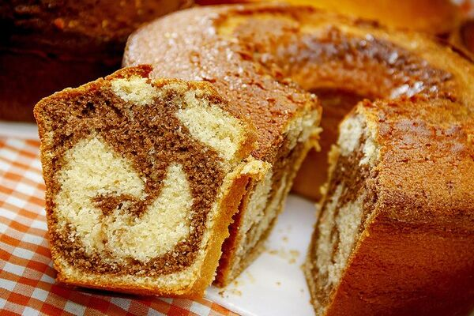

Bolo Tia Bel
INGREDIENTES:
- 4 ovos
- 2 xícaras (chá) de açúcar
- ½ xícara (chá) de óleo
- 1 xícara (chá) de leite integral
- 3 xícaras (chá) de farinha de trigo peneirada
- 1 colher (sopa) de fermento em pó
- 2 colheres (sopa) de chocolate em pó 50%
MODO DE PREPARO:
Bata os ovos com o açúcar na batedeira por aproximadamente 10 minutos, até que a mistura fique clara e com o volume dobrado, o segredo para um bolo fofinho. Desligue a batedeira e comece a adicionar, aos poucos, a farinha de trigo e o leite misturado com o óleo. Evite despejar tudo de uma vez. Use um fouet ou uma espátula para incorporar os ingredientes delicadamente, fazendo movimentos de baixo para cima, preservando a leveza da massa. Por último, adicione o fermento em pó. Se estiver utilizando farinha com fermento, essa etapa pode ser dispensada.
Separe 1/3 da massa e misture o chocolate em pó até obter uma cor homogênea. Em uma forma previamente untada e enfarinhada, despeje metade da massa branca, adicione a massa com chocolate, criando padrões com um palito, e finalize com o restante da massa branca. Leve ao forno preaquecido a 180°C por 45 a 50 minutos, ou até que o bolo passe no teste do palito.
A História por trás da Receita
Eu sempre tive vontade de fazer bolos gostosos e fofos como os da tia Bel, mas toda vez que tentava acabava com uma massa pesada e sem graça. Lembro-me de uma noite na cozinha da vó Lucinda, quando ela decidiu ensinar a tia Regina o seu bolo mesclado, o bolo que todos na família disputavam quando nos reuniamos. Eu que não sou boba nem nada corri para ver, ela com paciência e um sorriso, mostrou como bater os ovos até ficarem claros e dobrar de volume, explicando que o segredo estava na leveza. Ah! detalhe, não tinha batedeira era na mão mesmo.
Todas as vezes que faço esse bolo, meu coração se enche de alegria, porque foi naquele dia que entendi que fazer bolo é mais do que seguir uma receita, mas é também misturar amor e tradição. E são essas memórias que ficam para sempre.